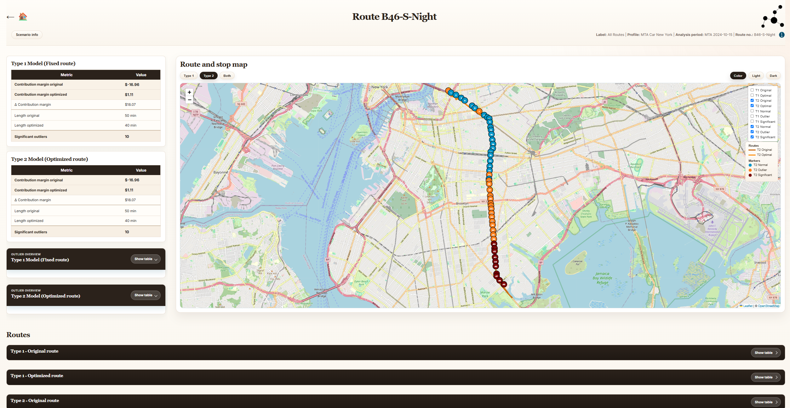
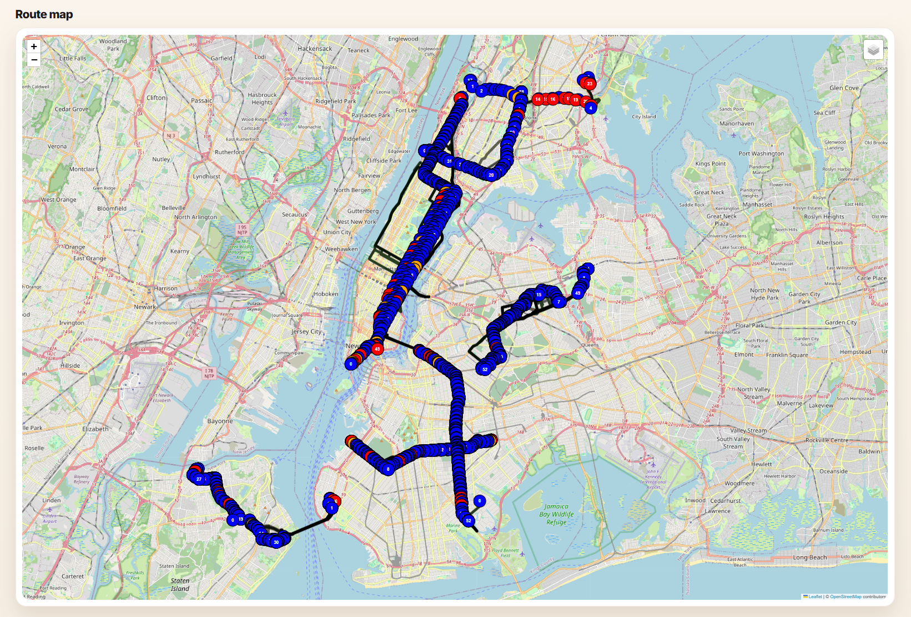
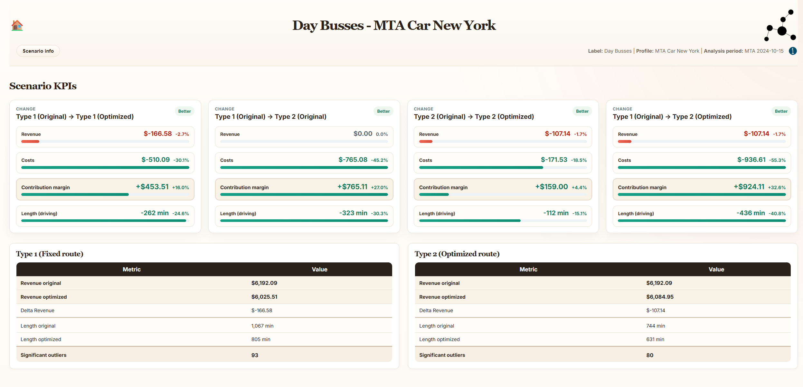
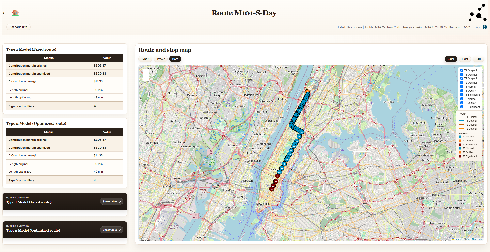

From Mathematical Model to Working System
This page follows the actual code: route data in, routed matrices in the middle, the core algorithm on top of that, and visual representation at the end.

The documentation needs to match the codebase, not just the report. This page therefore treats the full Solution layer as one central algorithmic component and focuses on the software system around it: input data, route preparation, routed distances, configuration, reusable computation and operational output.
Architecture overview
The implementation page answers a different question than the Solution page. The algorithm is already complete. What remains is the engineering needed to feed it with data and turn its output into an operational workflow.
Input and route preparation
Before any optimization begins, the software system must decide what the route units actually are. That preparation step turns raw address data, node descriptions and route assignments into the objects consumed by the algorithmic layer.
In the non-structured case, this mainly means building the route list \(R\), the mailbox vector
p and the relevant coordinates. In the structured case, it also means assembling the inner
and outer unit models that later feed Type 2 and hybrid search.
OSRM and routed distance matrices
The routing layer is separated from the economic layer. The code uses OSRMClient and the
routing helpers in libraries/classes/osrm_api.py and
libraries/utils/visualization/map_pipeline.py to build routed distances.
The resulting matrices are then consumed by the core algorithm as \(D_{ij}\).
D_all and D_outer. The first is the
address-level matrix used for Type 1 and inner traversal. The second is the outer unit-to-unit matrix
used for Type 2 structured optimization.
Integration with the algorithmic layer
The complete algorithmic layer lives on the Solution page. From the implementation perspective, the important question is which modules prepare data for that layer and which modules call its entrypoints.
| System layer | Role in the full pipeline | Key modules |
|---|---|---|
| Route preparation | Construct route-unit representations and structured route models. | structured_route_builder.py, route preparation helpers |
| Routing layer | Fetch or derive routed distances that become the optimization matrices. | osrm_api.py, map_pipeline.py |
| Algorithm invocation | Call find_outliers or find_outliers_hybrid with the prepared route data. |
core_algorithm.py |
| Result assembly | Collect the optimized route, outlier subsets, coverage change and final KPIs. | run_outlier_postprocessing, reporting helpers |
| Output layer | Render the algorithm result into maps, pages and route summaries. | html_generator.py, visualization modules |
This page deliberately does not repeat the search methods in detail. The important implementation point is that the surrounding system treats Type 1, Type 2, exact search, hybrid search and the Outlier Engine as one coherent algorithmic layer.
Configuration and runtime definitions
Solver choice, problem type, deterministic behavior, hybrid methods, beam width and threshold settings are kept outside the surrounding application flow. This separation allows the same software system to run different algorithmic configurations without rewriting the orchestration layer.
In practice, this configuration lives in libraries/config.py and the related runtime
definitions. That is where the system decides whether the route is treated as TSP, HPP, structured
OUT:TSP / OUT:HPP, exact, heuristic or hybrid.
Caching and reusable computation
Structured routing is expensive enough that repeated recomputation would quickly dominate runtime. The system therefore keeps reusable inner and outer route computations where possible, especially in the structured route pipeline.
Visual Representation
The implementation idea is simple: the route pipeline first generates a structured collection of output
files, mainly JSON and GeoJSON. On top of those files sits a visualization
layer.
For the demo bus dataset, that visualization layer is expressed in two forms: a static presentation and an application presentation. Neither performs optimization in the browser. Both read the same precomputed route results and differ only in how those results are presented to the reader.
The contract for that data-to-visualization step is defined by the demo-specific runtime definitions for
static/demo_bus_routes_nyc and application/demo_bus_routes_nyc. Those
definitions decide which scenario combinations are materialized, where the generated files are written and
which KPI views the frontend can later read.
| Layer | Output model | Role |
|---|---|---|
| Static | Pre-rendered HTML pages, maps and KPI tables for the demo scenario. | Presents the result as a fixed document that can be reviewed without the interactive application shell. |
| Application | Scenario-aware data views, route pages, maps and KPI comparisons for the same demo dataset. | Turns the same generated data into an interactive route browser with filtering, comparison and route-level drill-down. |
| Runtime Definitions | Demo-specific pipeline configuration for the two presentation modes. | Defines which files and scenario combinations the static and application layers can consume. |
In that sense, the main product of the pipeline is not the map itself. It is the generated route data. The map, KPI cards, scenario pages and route pages are all views built on top of that same data contract.
The static version is the simpler reading mode. It turns one prepared scenario into a small publication of overview pages, route pages and maps. The application version generalizes the same output into an interactive scenario browser, where the reader can move from label-level selection to KPI comparison and finally to route-level inspection without recomputing anything in the browser.



The essential architectural point is therefore a separation between data generation and data presentation. The route pipeline computes the scenario once, and the static and application layers then provide two different reading modes for the same underlying result.
Generated route reports and HTML
The algorithm does not end in a subset identifier. It ends in an operational report: original route, retained route, distance change, contribution-margin change and the significant outlier set that produced that result.
This is the final implementation bridge from optimization to use. The software system turns an algorithmic result into something planners can inspect visually and compare economically.
Reproducibility
Deterministic options are exposed where possible, configuration is externalized, and reusable route computations are cached where the structured models make that beneficial. All of these choices matter because the system is intended to make the same algorithmic layer usable repeatedly under different route assumptions.